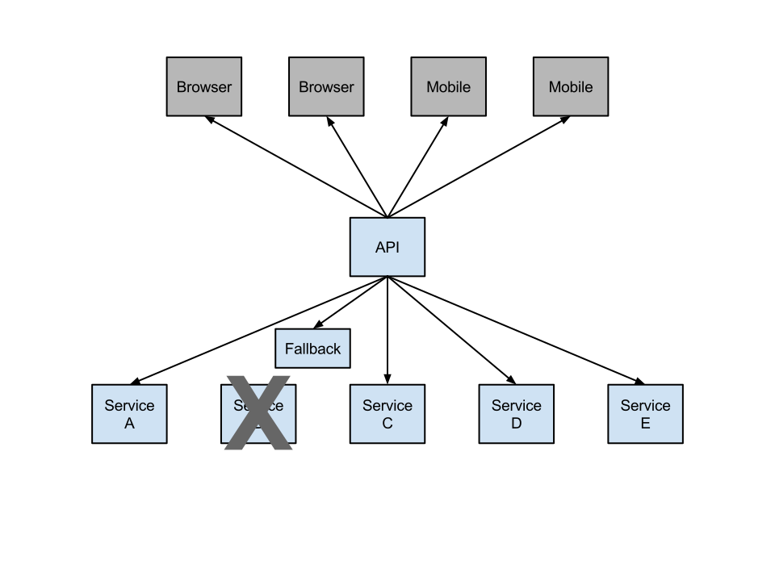

Example Distributed System: Minified

Spencer Gibb
twitter: @spencerbgibb
email: sgibb@pivotal.io
Dave Syer
twitter: @david_syer
email: dsyer@pivotal.io
(_Spring Boot and Netflix OSS_
or Spring Cloud Components)
It needs to be super easy to implement and update a service:
@RestController
class ThisWillActuallyRun {
@RequestMapping("/")
String home() {
Hello World!
}
}
and you don't get much more "micro" than that.
Deploying services needs to be simple and reproducible
$ cf push app.groovy
and you don't get much more convenient than that.
(Same argument for other PaaS solutions)
Book (Humble and Farley): http://continuousdelivery.com Netflix Blog: http://techblog.netflix.com/2013/08/deploying-netflix-api.html
It's excellent to be able to implement a microservice really easily (Spring Boot), but building a system that way surfaces "non-functional" requirements that you otherwise didn't have.
There are laws of physics and probability that make some problems unsolvable (consistency, availability, latency), but brittleness and manageability can be addressed with generic, boiler plate patterns.
Coordination of distributed systems leads to boiler plate patterns


Archaius
Curator
Asgaard
...

Consumers of config server can use client library as Spring Boot plugin
Features:
Environment from serverEnvironment@RefreshScope for atomic changes to beans via Spring lifecycleReilience pattern:
Release It!: https://pragprog.com/book/mnee/release-it

@HystrixCommand(fallbackMethod="getDefaultMessage")
public String getMessage() {
return restTemplate.getForObject(/*...*/);
}
private String getDefaultMessage() {
return "Hello World Default";
}
//somewhere else
helloService.getMessage();
/metrics/hystrix.stream@EnableHystrixDashboardzuul.proxy.route.customers: /customersHystrix->Ribbon->Eureka to forward requests to appropriate service@EnableZuulProxy
@Controller
class Application {
@RequestMapping("/")
String home() {
return 'redirect:/index.html#/customers'
}
}
@EnableSidecar/
#